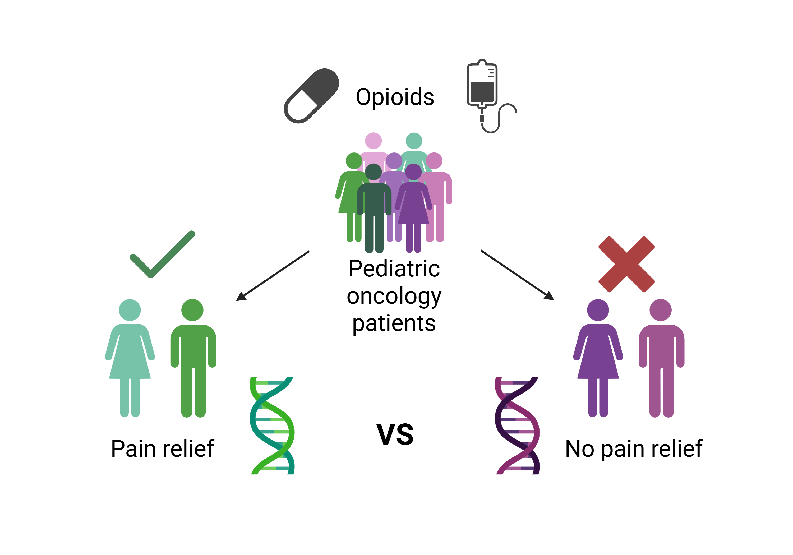

1
Discovery
Identifying Genetic Predictors of Individual Pain Treatment Responses
Using genomic studies considering large populations of children, our team maps the DNA variations that can help predict how likely a child is to develop painful conditions, experience serious pain, and respond to a variety of pain relievers, including opioids. Identification of the specific genetic cause lays the foundation for which the rest of the pipeline is built upon.
